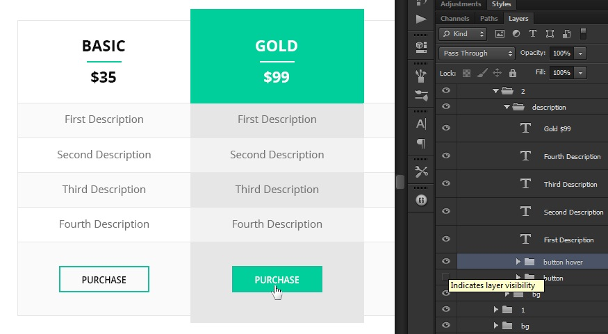

Created: 15/02/2014
By: bigpsfan
Email: psfanakbar@gmail.com
Thank you for downloading my theme. If you have any questions that are beyond the scope of this help file, please feel free to email via my user page contact form here. Thanks so much!
There are 1 PSD files included with this theme:
The PSD files are fully layered and easily customizable. If you'd like to change the look of the buttons/icons or any image, open the psd file and go to the specific group which are named accordingly then find out the layer, and than make the necessary adjustments, and then save the file as "image_name.png/jpg".
For you to customize easily I've included vectore shape & Custom made buttons, Icons & table
I have given the preview (screenshot) images. You can have a look on the item url
I've used stock images (only for preview demo purpose, those are not included in the main purchased files), icons files are included.
Fonts
There few shorthand are used like bg for background; img for image. The buttons are vector based shapes; you can customize their layer style as your wish.
There are "hover" & "active" effects as a group, like the image below.
Once again, thank you so much for purchasing this theme. As I said at the beginning, I'd be glad to help you if you have any questions relating to this theme. No guarantees, but I'll do my best to assist. If you have a more general question relating to the themes on ThemeForest, you might consider visiting the forums and asking your question in the "Item Discussion" section.
psdfan